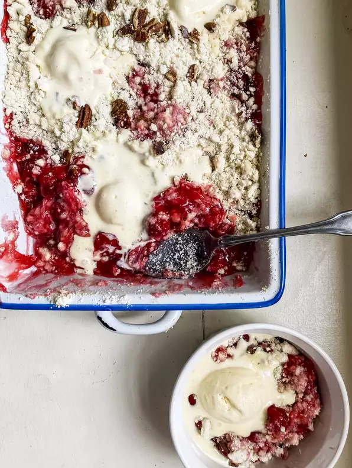

Cherry Dump Cake

Amazingly easy and amazingly good... too good! This is my mother-in-law's recipe that was just recently shared. It would be a shame not to share it. Best served warm and with vanilla ice cream (of course).
- 2 (21 ounce) cans cherry pie filling
- 1 (15.25 ounce) package white cake mix
- ¼ cup butter, melted
- ½ cup coarsely chopped pecans
- Preheat the oven to 350 degrees F (175 degrees C).
- Spread cherry pie filling over the bottom of a 9x13-inch baking pan. Stir cake mix and butter together into a gooey, clumpy mixture. Break into pieces between your fingers and crumble evenly on top of the cherry filling. Sprinkle pecans on top.
- Bake in the preheated oven until golden brown on top, 35 to 40 minutes.
Per Serving:
333 calories; protein 2.4g; carbohydrates 56.5g; fat 11.1g; cholesterol 10.2mg; sodium 284.1mg.